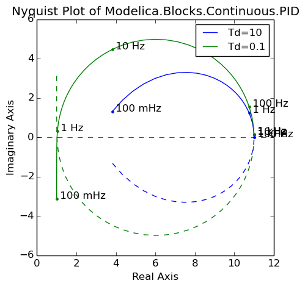
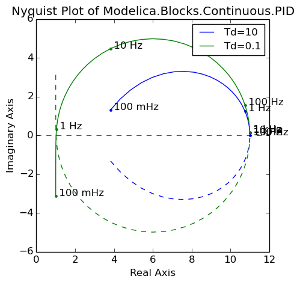

Python utilities to set up and analyze Modelica simulation experiments
ModelicaRes is a free, open-source tool to conveniently manage Modelica simulations, interpret results, and create publishable figures. It is possible to
The figures are generated via matplotlib, which offers a rich set of plotting routines. ModelicaRes includes functions to automatically pre-format and label some figures, like xy plots, Bode and Nyquist plots, and Sankey diagrams. ModelicaRes can be scripted or used in an interactive Python session with math and matrix functions from NumPy.
 

Please see the tutorial, which is available as an IPython notebook or online as a static page. The links below and in the sidebar provide the full documentation and many more examples.
The loadres script helps to load simulation and linearization results from the command line. The top-level module, modelicares, provides direct access to the most important classes and functions. Others must be accessed through their submodules. The modelicares.simres submodule has classes to load, analyze, and plot simulation results. The modelicares.linres submodule has a class to load, analyze, and plot results from linearizing model(s). The modelicares.exps submodule has tools to set up and manage simulation experiments. The modelicares.texunit submodule has functions to translate Modelica unit and displayUnit strings into LaTeX-formatted strings. The last submodule, modelicares.util, has general supporting functions and classes.
For a list of changes, please see the change log.
Installation
The easiest way to install ModelicaRes is to use pip:
pip install modelicares
On Linux, it may be necessary to have root privileges:
sudo pip install modelicares
Another way is to download and extract a copy of the package from the sidebar on the right. Run the following command from the base folder:
python setup.py install
Or, on Linux:
sudo python setup.py install
Some of the required packages may not install automatically.
The matplotlibrc file has some recommended revisions to matplotlib‘s defaults. To use it, copy it to the working directory or matplotlib‘s configuration directory. See http://matplotlib.org/users/customizing.html for details.
Credits
The main author is Kevin Davies. Code has been included from:
Suggestions and bug fixes have been provided by Arnout Aertgeerts, Kevin Bandy, Thomas Beutlich, Martin Sjölund, Mike Tiller, and Michael Wetter.
License terms and development
ModelicaRes is published under a BSD-compatible license. The development site is https://github.com/kdavies4/ModelicaRes. Please share any modifications you make (preferably as a pull request to the master branch at that site) in order to help others. If you find a bug, please report it. If you have suggestions, please share them.
See also
{kind=link}
{kind=link}
{kind=link}